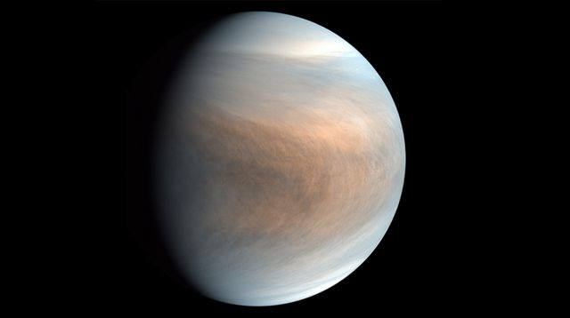

Empezamos por este planeta al ser el más cercano al Sol, a parte de ser el más pequeño de sus homólogos. Tiene un parecido a la Tierra, pues su composición es del 70% de elementos metálicos y el 30% restante corresponde a silicatos. Además, al igual que sucede con la Luna, Mercurio presenta un gran número de impactos de meteoritos.

A Venus le corresponde el puesto número dos en cuanto a distancia con respecto al Sol. Dentro de los Planetas del Sistema Solar, suele denominarse a Venus como el planeta “hermano de la Tierra” debido a su parecido, tanto en tamaño como en masa y su composición de tipo terrestre y rocoso.
El planeta Tierra, nuestro planeta, es el mayor de los denominados planetas rocosos. Se formó hace unos 4600 millones de años y su nombre proviene del latín “Terra”, deidad griega que corresponde a la feminidad y fecundidad. El 71% de su composición corresponde a la hidrosfera (agua), hecho diferencial que ha permitido la existencia y persistencia de la vida humana. Ningún otro planeta del Sistema Solar contiene tal nivel de líquido.

Marte es el segundo de los planetas del Sistema solar de menor tamaño, después de Mercurio. Desde hace tiempo es comúnmente conocido como “planeta rojo”, fruto del color rojizo que adquiere por el óxido de hierro en la mayoría de su superficie. Su tamaño es casi la mitad del de la Tierra y su gravedad un 40% menor, lo cual lo hace prácticamente inhabitable según las últimas investigaciones de la NASA.

El Planeta del Sistema Solar que recibe su nombre por el Dios Zeus de la mitología griega (Júpiter en mitología romana) es, precedido por el Sol, el planeta con mayor cuerpo celeste. Tiene un tamaño de 1300 veces mayor que la Tierra. Como cuerpo masivo gaseoso, su composición está formada básicamente de hidrógeno y hielo. Como dato curioso, es considerado el planeta más antiguo del Sistema Solar, precediendo al Sol inclusive.

Es famoso este planeta del Sistema Solar por su imponente brillo procedente de sus anillos que rodean al planeta. Volviendo a Galileo, éste lo avistó por primera vez en el año 1610. Prácticamente todo el planeta (un 96%) está formado por hidrógeno y el 3% restante de hielo.

Este planeta está considerado el primero en ser descubierto mediante un telescopio. Su composición es muy parecida a la de sus hermanos Saturno y Júpiter, puesto que está formado por helio e hidrógeno, así como de agua, amoníaco y metano pero en cantidades mayores. Una peculiaridad de este planeta del Sistema Solar es su atmósfera, con las temperaturas más bajas de todo el Sistema, alcanzando la mínima de -224 grados Celsius.

Neptuno fue descubierto hace unos dos siglos por Urbain Le Verrier, John Couch y Johann Galle, allá por el año 1847. No obstante, algunos historiadores y astrónomos sostienen que el célebre Galileo Galilei ya observó este planeta por el año 1612, dato todavía sin confirmar. El planeta Neptuno está compuesto de roca fundida, agua, metano, hidrógeno, hielo y amoníaco líquido.